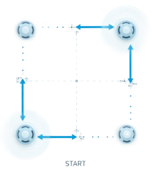

Indoors Pre-Flight Process
Perform the Square Path Test with Yaw Alignment to ensure your drone is properly aligned before flight.
Square Path Test with Yaw Alignment
⚠️
Always keep the drone upright and away from your body.
Follow staff guidance inside the flight zone.

- Enter the indoor flight zone carefully.
- Hold the drone securely with both hands.
- Walk in a square path (~2×2 meters).
- At each corner, rotate the drone (Yaw) to align with the new direction of travel.
- Complete the square before returning to the starting point.
Add A Drone
This step ensures your Remote Control is properly configured before finalizing the setup.